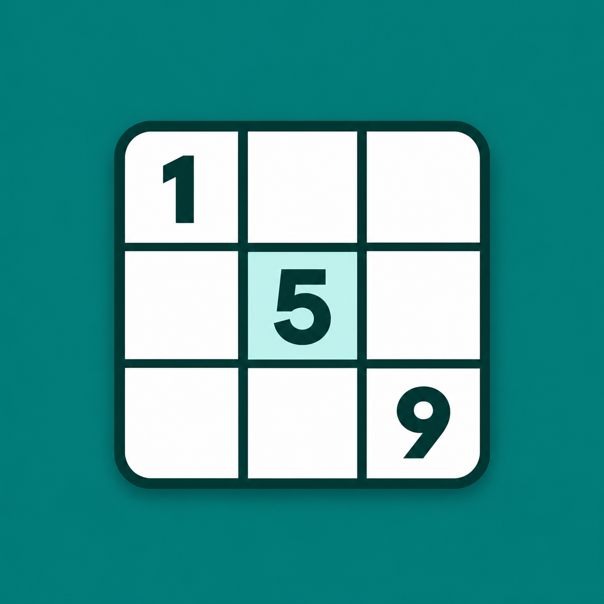

Game Rules
The rules and controls of the current web version of Classic Sudoku.
1. Complete the board
Every row, column, and 3 × 3 box must contain 1–9 exactly once. Given clues cannot be changed. The puzzle is complete when all 81 cells match its solution.
2. Entries and highlights
Select a cell and enter a digit with Notes off. Editable entries can be replaced or erased. A selection highlights its row, column, box, and matching numbers. Red digits indicate duplicates. On the number pad, a digit appearing nine times is disabled outside Notes mode.
3. Notes
With Notes on, digits toggle pencil marks in empty editable cells. Notes do not change your score or lives. Any changed nonzero final entry, including an incorrect one, removes matching pencil marks from related cells. Erase clears the selected editable cell’s value and notes.
4. Lives and mistakes
You begin with three lives. A changed final entry that differs from the solution costs one life, even when it creates no duplicate. Re-entering the same value has no effect. Erasing does not restore lives. The third mistake ends play.
5. Hints
All six difficulties allow three hints. A hint immediately reveals the selected editable cell if it is empty or incorrect; otherwise it reveals the first empty or incorrect cell. It clears that cell’s notes and matching notes in its row, column, and box. Each reveal uses one hint, without changing score or lives. Hints are disabled when exhausted, paused, or finished.
6. Score
Each cell earns 100 points the first time you manually enter its correct answer, at every difficulty. Erasing and re-entering that answer does not earn more points. Mistakes, elapsed time, and hints do not deduct points. A hint itself earns no points; if you later erase that revealed answer and enter it correctly yourself, it can earn its one reward if it has not already done so.
7. Difficulty
All six levels are unlocked. New games are generated with a unique solution. Higher levels aim for fewer starting clues. The generator retains extra clues when needed to preserve uniqueness, so clue targets are not guaranteed and do not certify a particular solving technique.
| Difficulty | Target clues | Hints |
|---|---|---|
| Easy | 50 | 3 |
| Medium | 40 | 3 |
| Hard | 32 | 3 |
| Expert | 26 | 3 |
| Master | 22 | 3 |
| Extreme | 17 | 3 |
8. Timer and pause
The timer measures play in minutes and seconds. It stops while paused, while the difficulty picker is open, and after a win or game over. Pause hides the puzzle and blocks entries and hints. Use Pause when taking a break; switching browser tabs does not automatically pause the game.
9. Restart and New game
Restart keeps the current puzzle and difficulty. It clears entries, notes, and rewarded-cell history; resets score and time to zero; restores three lives and three hints; turns Notes off; and resumes play. New game replaces the puzzle after you select a difficulty. Closing the difficulty picker keeps your current progress.
10. Completion and progress
Solving every cell correctly wins the game. A win or third mistake blocks further number and hint input. Current progress is held only while the game page is open; reloading or navigating away discards it. Open help links in a new tab if you want to keep playing the current puzzle.
Worked scoring example
Enter five cells correctly for the first time: 500 points. Make two mistakes and reveal one hint: the score stays 500, one life remains, and two hints remain. Erase and re-enter one of those five rewarded answers: the score remains 500.